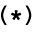
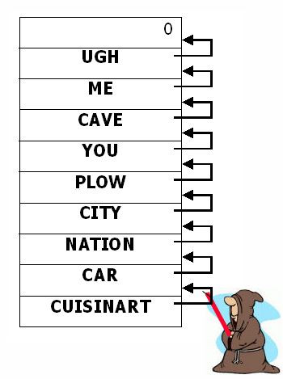
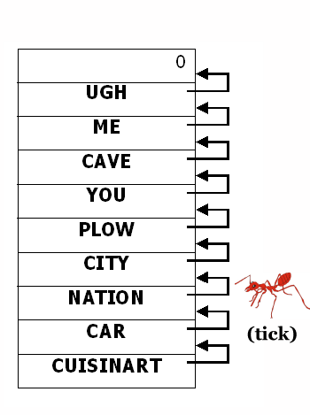
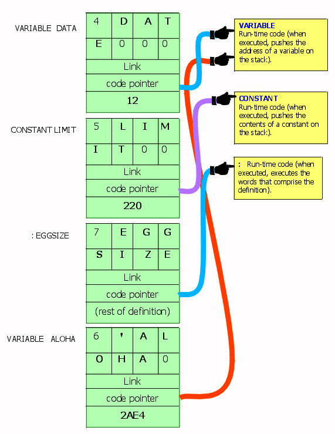
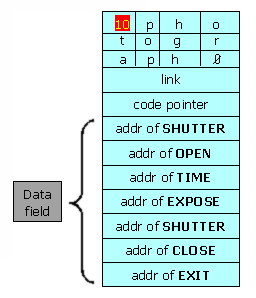
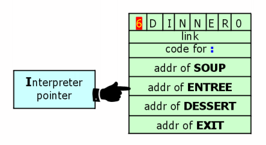
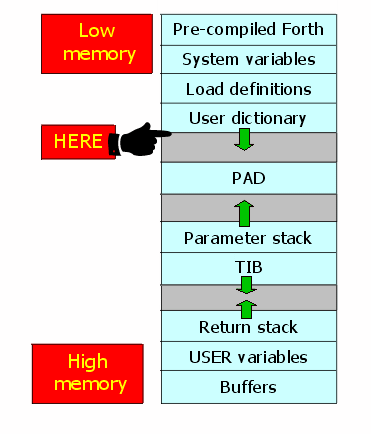

after DINNER,
then there is nothing more to interpret. So when we exit INTERPRET, where
does that leave us? In the outermost definition of each terminal, called QUIT.
after DINNER,
then there is nothing more to interpret. So when we exit INTERPRET, where
does that leave us? In the outermost definition of each terminal, called QUIT.
Let's stop for a chapter to lift Forth's hood and see what goes on inside.
Some of the information contained herein we've given earlier, but, at the risk of redundancy, we're now going to view the Forth "machine" as a whole, to see how it all fits together.
Back in the first chapter we learned that the text interpreter, whose name is INTERPRET, picks words out of the input stream and tries to find their definitions in the dictionary. If it finds a word, INTERPRET has it executed.
We can perform these separate operations ourselves by using words that perform the component functions of INTERPRET. For instance, the word ' (pronounced tick) finds a definition in the dictionary and returns its execution token. If we have defined GREET as we did in Chap. 1, we can now say
' GREET U. 4956608 okand discover the execution token of GREET (whatever it happens to be).
We may also directly use EXECUTE. INTERPRET will execute a definition, given its execution token ("xt") on the stack. Thus we can say
' GREET EXECUTE Hello, I speak Forth okand accomplish the same thing as if we had merely said GREET, only in a more roundabout way.
If tick cannot find a word in the dictionary, it executes ABORT" and prints an error message.
Forth's text interpreter uses a word related to tick that returns a zero flag if the word is found. The name and usage of the word varies, but the conditional structure of the INTERPRET phrase always looks like this:
(find the word) IF (convert to a number) ELSE (execute the word) THENthat is, if the string is not a defined word in the dictionary, INTERPRET tries to convert it as a number. If it is a defined word, INTERPRET executes it.
The word ' has several uses. For instance, you can use the phrase
' GREET .to find out whether GREET has been defined, without actually having to execute it (it will either print the xt or respond with an error).
You can also use the xt to DUMP the contents of the definition, like this:
' GREET 12 CELLS DUMP A054620: 68 13 40 00 00 00 00 00 - 60 3D 03 0A 15 48 65 6C h.@.....`=...Hel A054630: 6C 6F 2C 20 49 20 73 70 - 65 61 6B 20 46 6F 72 74 lo, I speak Fort A054640: 68 20 20 20 38 02 41 00 - 00 00 00 00 00 00 00 00 h 8.A......... ok
Or you can use tick to implement something called "vectored execution." Which brings us to the next section ...
While it sounds hairy, the idea of vectored execution is really quite simple. Instead of executing a definition directly, as we did with the phrase
' GREET EXECUTEwe can execute it indirectly by keeping its xt in a variable, then executing the contents of the variable, like this:
' GREET pointer ! pointer @ EXECUTE
The advantage is that we can change the pointer later, so that a single word can be made to perform different things at different times.
Here is an example that you can try yourself:
( 1 ) : HELLO ." Hello " ; ( 2 ) : GOODBYE ." Goodbye " ; ( 3 ) VARIABLE 'aloha ' HELLO 'aloha ! ( 4 ) : ALOHA 'aloha @ EXECUTE ;
In the first two lines, we've simply created words which print the strings "Hello" and "Goodbye." In line 3, we've defined a variable called 'aloha. This will be our pointer. We've initialized the pointer with the xt of HELLO. In line 4, we've defined the word ALOHA to execute the definition whose xt is in 'aloha.
Now if we execute ALOHA, we will get
ALOHA Hello ok
Alternatively, if we execute the phrase
' GOODBYE 'aloha !to store the xt of GOODBYE into 'aloha, we will get
ALOHA Goodbye okThus the same word, ALOHA, can do two different things.
Notice that we named our pointer 'aloha (which we would pronounce tick-aloha). Since tick provides an xt, we use it as a prefix to suggest "the xt of" ALOHA. It is a Forth convention to use this prefix for vectored execution pointers.
Tick always goes to the next word in the input stream. What if we put tick inside a definition? When we execute the definition, tick will find the next word in the input stream, not the next word in the definition. Thus we could define
: SAY ' 'aloha ! ;then enter
SAY HELLO ok ALOHA Hello okor
SAY GOODBYE ok ALOHA Goodbye okto store the xt of either HELLO or GOODBYE into 'aloha.
But what if we want tick to use the next word in the definition? We must use the word ['] (bracket-tick-bracket) instead of tick. For example:
: COMING ['] HELLO 'aloha ! ; : GOING ['] GOODBYE 'aloha ! ;
Now we can say
COMING ok ALOHA Hello ok GOING ok ALOHA Goodbye ok
Here are the commands we've covered so far:
| ' xxx | ( -- addr ) | Attempts to find the execution token of xxx (the word that follows in the input stream) in the dictionary. | |
| ['] | compile time ( -- ) run time ( -- addr ) | Used only in a colon definition, compiles the execution token of the next word in the definition as a literal. |
All definitions, whether they have been defined by :, by VARIABLE, by VALUE, by CREATE, or by any other "defining word," share these basic parts:
name field link field code pointer field data field
Using the variable DATE as an example, here's how these components are arranged within each dictionary entry. In this diagram, each horizontal line represents one cell in the dictionary:
No two Forth systems are alike in this respect. There may be more basic parts, their size may differ, and the order of the components almost certainly differs.
In this book we're only concerned with the functions of the four components, not with their order inside a dictionary entry.
In our example, the first byte contains the number of characters in the full name of the defined word (there are four letters in DATE). The next four bytes contain the ASCII representations of the four letters in the name of the defined word.
Notice the "precedence bit" in the diagram. This bit is used during compilation to indicate whether the word is supposed to be executed during compilation, or to simply be compiled into the new definition. More on this in Chap. 11.
The "link" cell contains the address of the previous definition in the dictionary list. The link cell can be used in linearly searching the dictionary. To simplify things a bit, imagine that it works this way:
 Each time the compiler adds a new word to the dictionary, he sets the link field to point to the address of the previous definition. Here he is setting the link field of CUISINART to point to the definition of CAR.
 At search time, tick (or bracket-tick-bracket, etc.) starts with the most recent word and follows the "chain" backwards, using the address in each link cell to locate the next definition back.
The link field of the first definition in the dictionary contains a zero, which tells tick to give up; the word is not in the dictionary.
 Next is the "code pointer." The xt contained in this pointer is what distinguishes a variable from a constant or a colon definition. It is the address of the instruction that is executed first when a particular type of word is executed. Conceptually, in the case of a variable, the pointer points to code that pushes the address of the variable on the data stack. In the case of a constant, the pointer points to code that pushes the contents of the constant on the data stack. In the case of a colon definition, the pointer points to code that executes the rest of the words in the colon definition. In practice there are many ways to implement this concept, including native code realizations.
The code that is pointed to is called the "run-time code" because it is used when a word of that type is executed (not when a word of that type is defined or compiled).
All variables (conceptually) have the same code pointer; all constants have the same code pointer of their own, and so on.
Following the code pointer is the data field. In variables and constants, the data field is only one cell. In a 2VARIABLE or a 2CONSTANT, the data field is two cells. In an array, the data field can be as long as you want it. In a colon definition, the length of the data field depends on the length of the definition, as we'll explain in the next section. Strictly speaking, the colon definition of a modern Forth does not have a data field.
The xt that is supplied by tick and expected by EXECUTE is the code pointer defined above. The beginning of the data field can be found with >BODY, a word that computes the data field given an xt. >BODY does not work for colon definitions. Some Forths may even forbid the use of >BODY on any system data structure (variables constants, user, etc.).
While the format of the head and code pointer is the same for all types of definitions, the format of the data field varies from type to type. Let's look at the data field of a colon definition.
The data field of a colon definition contains the xts of the previously defined words which comprise the definition. Here is the dictionary entry for the definition of PHOTOGRAPH, which is defined as
: PHOTOGRAPH SHUTTER OPEN TIME EXPOSE SHUTTER CLOSE ;
 When PHOTOGRAPH is executed, the definitions that are pointed to by the successive xts are executed in turn. The mechanism which reads the list of xts and executes the definitions they point to is called the "address interpreter."
The word ; at the end of the definition compiles the xt of a word called EXIT. As you can see in the figure, the xt of EXIT resides in the last cell of the dictionary entry. The address interpreter will execute EXIT when it gets to this address, just as it executes the other words in the definition. EXIT terminates the execution of the address interpreter, as we will see in the next section.
The function of EXIT is to return the flow of execution to the next higher-level definition that refers to the current definition. Let's see how this works in simplified terms.
Suppose that DINNER consists of three courses:
: DINNER SOUP ENTREE DESSERT ;and that tonight's ENTREE consists simply of
: ENTREE CHICKEN RICE ;
 We are executing DINNER and we have just finished the SOUP. The pointer that is used by the address interpreter is called the "interpreter pointer". Since the next course after the SOUP is the ENTREE, our interpreter pointer is pointing to the cell that contains the xt of ENTREE.
The action the address interpreter performs can be seen as "subroutine calling" all the xts in the list, with the return stack used to keep return adresses, and the EXIT working as the machine's RTS (return from subroutine) instruction.
Now you're of course wondering: what happens when we finally execute the EXIT in DINNER. Whose return address is on the return stack? What do we return to?
Well, remember that DINNER has just been executed by EXECUTE,
which is a component of INTERPRET. INTERPRET
is a loop which checks the entire input stream. Assuming that we entered after DINNER,
then there is nothing more to interpret. So when we exit INTERPRET, where
does that leave us? In the outermost definition of each terminal, called QUIT.
QUIT, in simplified form, looks like this:
: QUIT BEGIN (clear return stack) (accept input) INTERPRET ." ok " CR AGAIN ;
(The parenthetical comments represent words and phrases not yet covered.) We can see that after the word INTERPRET comes a dot-quote message, "ok," and a CR, which of course are what we see after interpretation has been completed.
Next is the phrase
AGAINwhich unconditionally returns us to the beginning of the loop, where we clear the return stack and once again wait for input.
If we execute QUIT at any level of execution, we will immediately cease execution of our application and re-enter QUIT's loop. The returnstack will be cleared (regardless of how many levels of return addresses we had there, since we could never use any of them now) and the system will wait for input. You can see why QUIT can be used to keep the message "ok" from appearing at our terminal.
The definition of ABORT" uses QUIT.
It's possible to include EXIT in the middle of a definition. For example, if we were to redefine ENTREE as follows:
: ENTREE CHICKEN EXIT RICE ;then when we subsequently execute DINNER, we will exit right after CHICKEN and return to the next course after the ENTREE, i.e., DESSERT.
EXIT is commonly used to exit from deeply nested conditional structures.
| EXIT | ( -- ) | When compiled within a colon definition, terminates execution at that point. | |
| QUIT | ( -- ) | Clears the return stack and gives control to the terminal. No message is given. |
This is the memory map of a typical Forth system: 
This section of memory contains "system variables" which are created by the basic Forth core and used by the entire system. They are not generally used by the user.
The dictionary will grow into higher memory as you add your own definitions. The next available cell in the dictionary at any time is pointed to by a variable called CP. During the process of compilation, the pointer CP is adjusted cell-by-cell as the entry is being added to the dictionary. Thus CP is the compiler's bookmark; it points to the place in the dictionary where the compiler can next compile.
CP is also used by the word ALLOT, which advances CP by the number of bytes given. For example, the phrase
5 CELLS ALLOTadds twenty to CP so that the compiler will leave room in the dictionary for a five-cell array.
A related word is HERE, which is simply defined as
: HERE CP @ ;to put the value of CP on the stack. The word , (comma), which stores a single-length value into the next available cell in the dictionary, is simply defined
: , HERE ! CELL ALLOT ;that is, it stores a value into HERE and advances the dictionary pointer one cell to leave room for it.
You can use HERE to determine how much memory any part of your application requires, simply by comparing the HERE from before with the HERE after compilation. For example,
HERE S" random.frt" INCLUDED HERE SWAP - . 196 okindicates that the definitions loaded by the file random.frt filled 196 bytes of memory space in the dictionary.
At a certain distance from HERE in your dictionary, you will find a small region of memory called the "pad." Like a scratch pad, it is usually used to hold ASCII character strings that are being manipulated prior to being sent out to a terminal. For example, the number formatting words use the pad to hold the ASCII numerals during the conversion process, prior to TYPE.
The size of the pad is indefinite. In most systems there are hundreds of kilobytes between the beginning of the pad and the top of the parameter stack.
Since the pad's beginning address is defined relative to the last dictionary entry, it moves every time you add a new definition or execute FORGET or MARKER. This arrangement proves safe, however, because the pad is never used when any of these events are occurring. The word PAD returns the current address of the beginning of the pad. It is defined simply:
: PAD HERE 340 + ;that is, it returns an address that is a fixed number of bytes beyond HERE. (The actual number varies.)
Far above the pad in memory is the area reserved for the parameter stack. Although we like to imagine that values actually move up or down somewhere as we "pop them off" and "push them on," in reality nothing moves. The only thing that changes is a pointer to the "top" of the stack.
As you can see below, when we "put a number on the stack," what really happens is that the pointer is "decremented" (so that it points to the next available location towards low memory), then our number is stored where the pointer is pointing. When we "remove a number from the stack," the number is fetched from the location where the pointer is pointing, then the pointer is incremented. Any numbers above the stack pointer on our map are meaningless.
As new values are added to the stack, it "grows towards low memory."
The stack pointer is fetched with the word SP@ (pronounced s-p-fetch). Since SP@ provides the address of the top stack location, the phrase
SP@ @fetches the contents of the top of stack. This operation, of course, is identical to that of DUP. If we had five values on the stack, we could copy the fifth one down with the phrase
SP@ 4 CELLS + @(but this is not considered good programming practice).
The bottom of the stack is pointed to by a variable called SP0 (s-p-zero). SP0 always contains the address of the next cell below the "empty stack" cell.
Notice that with double-length numbers, the high-order cell is stored at the lower memory address whether on the stack or in the dictionary. The operators 2@ and 2! keep the order of the cells consistent.
TIB contains the starting address for the "input message buffer," or "Terminal Input Buffer," which grows towards high memory (the same direction as the pad). When you enter text from the terminal, it gets stored into this buffer where the text interpreter will scan it.
Above the buffer resides the return stack, which operates identically to the parameter stack. There are no high-level Forth words analogous to SP0 and SP@ that refer to the return stack.
The next section of memory contains "user variables." These variables include BASE, SP0, and many others that we'll cover in an upcoming section.
This completes our journey across the memory map of a typical Forth system. Here are the words we've just covered that relate to memory regions in the Forth system:
| HERE | ( -- addr ) | Returns the next available dictionary location. | |
| PAD | ( -- addr ) | Returns the beginning address of a scratchpad area used to hold character strings for intermediate processing. | |
| SP@ | ( -- addr ) | User variable. Return the address of the top of the stack before SP@ is executed. | |
| SP0 | ( -- addr ) | User variable. Contains the address of the bottom of the parameter stack. |
The following list shows most of the user variables. Some we won't ever mention again. Don't try to memorize this table. Just remember where you can find it.
| TIB | Contains the address of the start of the terminal input buffer. | |
| #TIB | Contains the size of the terminal input buffer. | |
| SCR | A pointer to the current block number (set by LIST). | |
| BASE | Number conversion base. | |
| CP | Dictionary pointer. Pointer to the next available byte. | |
| >IN | A pointer to the current position in the input stream. | |
| BLK | If non-zero, a pointer to the block being interpreted by LOAD. A zero indicates interpretation from the terminal (via the input message buffer). |
User variables are not like ordinary variables. With an ordinary variable (one defined by the word VARIABLE), the value is kept in the body of the dictionary entry. Each user variable, on the other hand, is kept in an array called the "user table." The dictionary entry for each user variable is located elsewhere; its body contains an offset into the user table. When you execute the name of a user variable, such as CP, this offset is added to the beginning address of the user table, allowing you to use @ or ! in the normal way.
The main advantage of user variables is that any number of tasks can use the same definition of a variable and each get its own value (because each task has not only its own stacks, but also its own user table). Each task that executes
BASE @gets the value for BASE from its own user table. This saves a lot of room in the system while still allowing each task to execute independently.
User variables are defined by the word USER. The sequence of user variables in the table and their offset values vary from one system to another.
To summarize, there are three kinds of variables: System variables contain values used by the entire Forth system. User variables contain values that are unique for each task, even though the definitions can be used by all tasks in the system. Regular variables can be accessible either system-wide or within a single task only.
Here's a list of the Forth words we've covered in this chapter:
| ' xxx | ( -- addr ) | Attempts to find the execution token of xxx (the word that follows in the input stream) in the dictionary. | |
| ['] | compile time ( -- ) run time ( -- addr ) | Used only in a colon definition, compiles the execution token of the next word in the definition as a literal. | |
| EXECUTE | ( xt -- ) | Executes the dictionary entry whose execution token is on the stack. | |
| EXIT | ( -- ) | When compiled within a colon definition, terminates execution at that point. | |
| QUIT | ( -- ) | Clears the return stack and gives control to the terminal. No message is given. | |
| HERE | ( -- addr ) | Returns the next available dictionary location. | |
| PAD | ( -- addr ) | Returns the beginning address of a scratchpad area used to hold character strings for intermediate processing. | |
| SCR | ( -- addr ) | User variable. A pointer to the current block number (set by LIST). | |
| BASE | ( -- addr ) | User variable. Number conversion base. | |
| SP@ | ( -- addr ) | User variable. Return the address of the top of the stack before SP@ is executed. | |
| TIB | ( -- addr ) | User variable. Contains the address of the start of the terminal input buffer. | |
| #TIB | ( -- addr ) | User variable. Contains the size of the terminal input buffer. | |
| SP0 | ( -- addr ) | User variable. Contains the address of the bottom of the parameter stack. | |
| >IN | ( -- addr ) | User variable. A pointer to the current position in the input stream. | |
| BLK | ( -- addr ) | User variable. If non-zero, a pointer to the block being interpreted by LOAD. A zero indicates interpretation from the terminal (via the input message buffer). |
| | |
|---|---|
| Address interpreter | The second of Forth's two interpreters, the one which executes the data (list of addresses, list of calls, machine code, ...) found in the dictionary entry of a colon definition. The address interpreter also handles the nesting of execution levels for words within words. |
| Body | the code and data field of a Forth dictionary entry. |
| Cfa | code field address; the address of a dictionary entry's code pointer field. |
| Code pointer field | the cell in a dictionary entry which somehow points out the xt of the run-time code for this particular type of definition. For example, in a dictionary entry compiled by :, the field would point out the address interpreter. |
| Defining word | a Forth word which creates a dictionary entry. Examples include :, CONSTANT, VARIABLE, etc. |
| Head | the name and link fields of a Forth dictionary entry. |
| Input message buffer | the region of memory within a terminal task that is used to store text as it arrives from the terminal. Incoming source text is interpreted here. |
| Link field | the cell in a dictionary entry which contains the address of the previous definition, used in searching the dictionary. |
| Name field | the area of a dictionary entry which contains the name of the defined word, along with the number of characters in the name. |
| Pad | the region of memory within a terminal task that is used as a scratch area to hold character strings for intermediate processing. |
| Data field | the area of a dictionary entry which contains the "contents" of a definition: for a CONSTANT, the value of the constant, for a VARIABLE, the value of the variable; for a colon definition, the list of xts of words that are to be executed in turn when the definition is executed. |
| Run-time code | a routine, compiled in memory, which specifies what happens when a member of a given class of words is executed. The run-time code for a colon definition is the address interpreter; the run-time code for a variable pushes the address of the variable's body on the stack. |
| System variable | one of a set of variables provided by Forth, which are referred to system-wide (by any task). Contrast with "user variables.". |
| Task | in Forth, a partition in memory that contains at minimum a parameter and a return stack and a set of user variables. |
| User variable | one of a set of variables provided by Forth, whose values are unique for each task. Contrast with "system variables." |
| Vectored execution | the method of specifying code to be executed by providing not the address of the code itself, but the address of a location which contains the xt of the code. This location is often called "the vector." As circumstances change within the system, the vector can be reset to point to some other piece of code. |
| | |

CONVICTED-OF BOOKMAKING 3 COUNTS TAX-EVASION WILL-SERVEwill compute the sentence for one count of bookmaking and three counts of tax evasion. [answer]
DATE .and
' DATE >BODY .
What is the difference between these two phrases:
BASE .and
' BASE >BODY .[answer]
Define a one-dimensional array of cells which will return the nth element's address when given a subscript n. Define several words which output something at your terminal and take no inputs. Store the xts of these output words in various elements of the array. Store the address of a do-nothing word in any remaining elements of the array. Define a word which will take a valid array index and execute the word whose address is stored in the referenced element.
For example,
1 DO-SOMETHING Hello, I speak Forth. ok 2 DO-SOMETHING 1 2 3 4 5 6 7 8 9 10 ok 3 DO-SOMETHING ********** ********** ********** ********** ********** ok 4 DO-SOMETHING ok 5 DO-SOMETHING ok [answer]